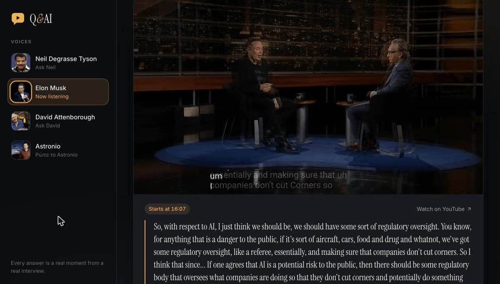

Case study · RAG over video
Q&AI
Ask a public figure a question and the app plays the exact moment in a real interview where they answer it. Retrieval-augmented generation over 371 videos (284 hours) in English and Greek, with an evaluation harness behind every change: clips now start within a second 99% of the time, and searches take about 1.3 s.
Read the case study
Private repository